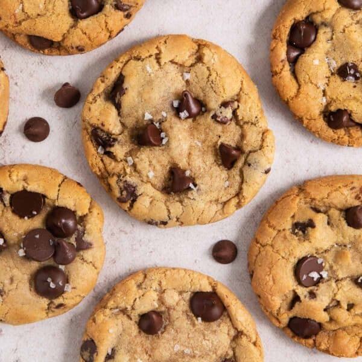

Home
Chocolate Chip Cookie

Description
These classic chocolate chip cookies are golden brown on the outside,
soft and gooey on the inside, and packed with melty chocolate chips
in every bite. Perfect with a glass of milk or as a warm, comforting
treat any time of day.
Ingredients
- 1 cup unsalted butter, softened
- 1 cup white sugar
- 1 cup packed brown sugar
- 2 large eggs
- 2 teaspoons vanilla extract
- 3 cups all-purpose flour
- 1 teaspoon baking soda
- ½ teaspoon baking powder
- 1 teaspoon salt
- 2 cups semisweet chocolate chips
Directions
- Preheat your oven to 350°F (175°C).
- In a large bowl, cream together the butter, white sugar, and brown sugar until smooth.
- Beat in the eggs one at a time, then stir in the vanilla.
- Combine the flour, baking soda, baking powder, and salt in a separate bowl; gradually blend into the butter mixture.
- Stir in the chocolate chips.
- Drop spoonfuls of dough onto ungreased baking sheets.
- Bake for 10 to 12 minutes, or until the edges are golden.
- Allow cookies to cool on the baking sheet for a few minutes before transferring to a wire rack.